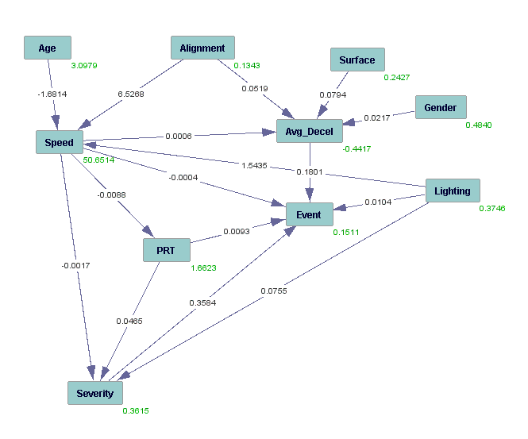
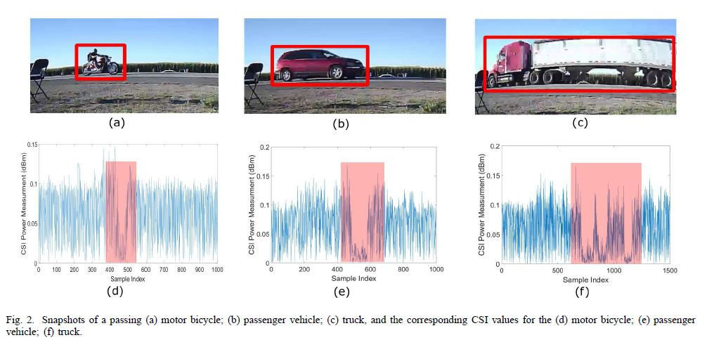
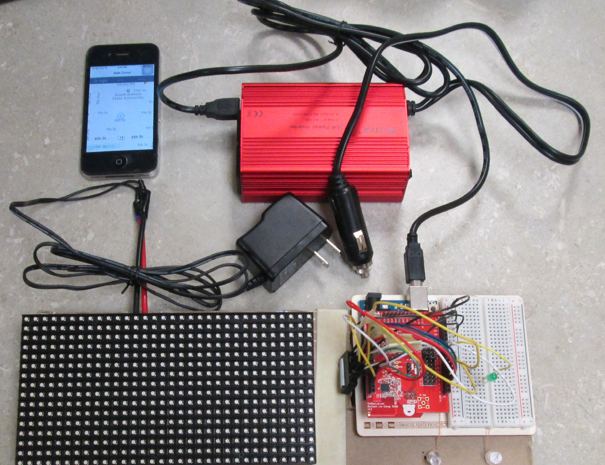

|  |
Mining the Relationships between Perception-Reaction Times, Emergency Deceleration Rates, and Crash Outcomes Using Naturalistic Driving Data
Perception-Reaction Time (PRT) and deceleration rate are two key components in geometric design of highways and streets.
Combined with a design speed, they determine the minimum required Stopping Sight Distance (SSD). We applied multiple statistical analysis techniques to SHRP2 naturalistic driving data.
The objectives of this research were:
Technical reportJonathon Wood, Shaohu Zhang Evaluating Relationships Between Perception-Reaction Times, Emergency Deceleration Rates, and Crash Outcomes using Naturalistic Driving Data MPC-17-338. North Dakota State University - Upper Great Plains Transportation Institute, Fargo: Mountain-Plains Consortium, 2017 |
 |
Vehicle Detection Using WiFi SignalsThe orthogonal frequency division multiplexing (OFDM) modulation scheme has been adopted for the physical layer of the current WiFi standards. The OFDM divides the channel into subcarriers, and data is transmitted over these subcarriers. Using this channel division mechanism, the OFDM overcomes the frequency selective fading caused by the multipath effect. The WiFi CSI characterizes the signal strength and phase of these OFDM subcarriers. This study demonstrates that the WiFi signals can be used to create a multifaceted traffic monitoring system that is capable of performing vehicle counting, classification, lane detection, and speed measurement. Distinctive CSI patterns of passing vehicles are captured and analyzed to fulfill various functions of the traffic monitoring system PublicationMyounggyu Won, Shaohu Zhang, Sang H. Son
WiTraffic: Low-cost and Non-Intrusive Traffic Monitoring System Using WiFi
Proceedings of the IEEE 26th International Conference on Computer Communications and Networks ( ICCCN'17), 2017
Shaohu Zhang, Myounggyu Won, Sang H. Son Poster Abstract:WiTraffic - Non-intrusive Vehicle Classification Using WiFi Proceedings of the 14th ACM Conference on Embedded Network Sensor Systems ( SenSys'16), 2016 |
|
A Smart In-vehicle Horizontal Curve Detection System
Roadway curves are a potential safety hazard frequently
causing roadway crashes.Identifying
locations and geometric characteristics of the roadway curve is
critical to the accident analysis and prevention.However, collecting
curve information using traditional approaches is costly
and time-consuming.
In this project, we propose a novel approach to
roadway inventory based on embedded sensors of a smartphone
to automatically identify and measure various kinds
of curves.The key idea is that the angular velocity around z-axis of
the gyroscope (i.e., z-axis pointing toward the sky) is changed
when a vehicle makes a curve; thus a curve can be identified
by diagnosing variation in the angular velocity.
we make the following contributions:
PublicationShaohu Zhang, Myounggyu Won, Sang H. Son Low-cost Realtime Horizontal Curve Detection Using Inertial Sensors of a Smartphone In the 84th IEEE Vehicular Technology Conference (VTC'16) |
|
|  |
A Smart In-vehicle Horizontal Curve Warning SystemSmartphones and other portable personal devices integrating global positioning system (GPS), Bluetooth Low Energy (BLE), and advanced computing technologies become more accessible and popular nowadays. This presents great opportunities for data acquisition in Intelligent Transportation Systems (ITS) and for vehicle-to-infrastructure (V2I) communications. In this study, a novel idea is proposed to prevent motor vehicles from running off the road by warning drivers of horizontal curves and a smartphone based application equipped with BLE technology and head-up display (HUD) is prototyped. This system is able to track driver speed and compare vehicle position with curve locations in a real-time fashion. Messages can be wirelessly communicated from the smartphone to a receiving unit through BLE technology, and displayed by HUD on the vehicle's front windshield. PublicationXiao Qin, Shaohu Zhang, Wei Wang Advanced Curve-speed Warning System Using an In-Vehicle Head-Up Display[PDF] In the TRB 94th Transportation Research Board Annual Meeting (TRB'15) |